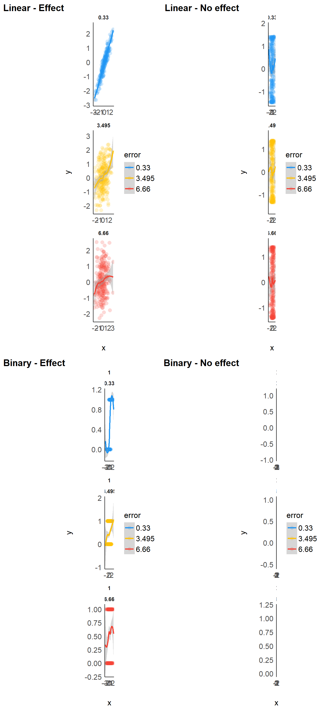
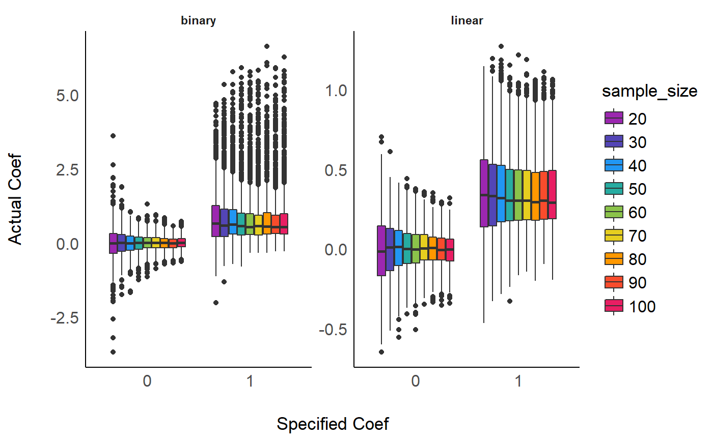
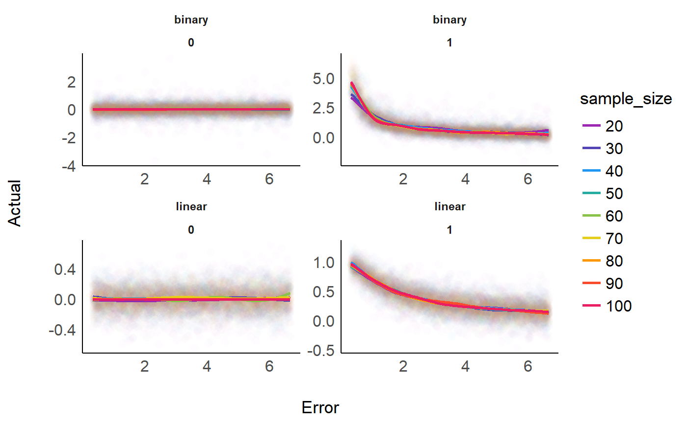
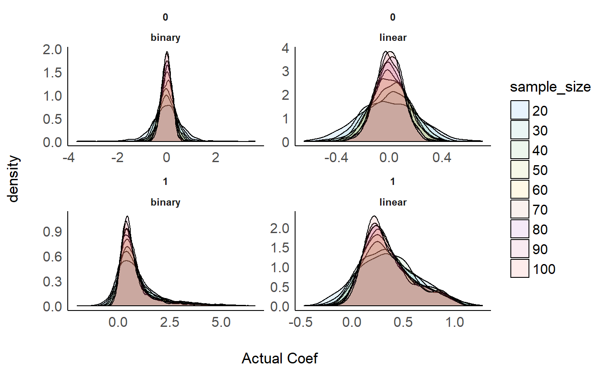

bayesian_indices.RmdThis code was used by the articles presented in bayestestR to simulate statistical models.
The simulation aimed at modulating the following characteristics:
We generated a dataset for each combination of these characteristics, resulting in a total of 2 * 2 * 9 * 1000 = 36000 Bayesian and frequentist models.
library(tidyverse)
library(bayestestR)
library(parameters)
library(see)
library(rstanarm)
# Convenience functions --------------------------------------------------------
# Generate data
generate_data <- function(true_effect=0, outcome_type="linear", sample_size=50, error=0){
# Generate data
data <- data.frame(x = sort(rnorm(sample_size, 0, 1)))
if(outcome_type == "linear"){
if(true_effect == 1){
data$y <- data$x
} else{
data$y <- parameters::standardize(cos(data$x*5))
}
} else{
if(true_effect == 1){
data$y <- ifelse(data$x > 0, 1, 0)
} else{
data$y <- ifelse(cos(data$x*5) > 0, 1, 0)
}
}
# Add error
data$x <- parameters::standardize(data$x + rnorm(sample_size, 0, error))
return(data)
}
# Compute model
compute_model <- function(data, outcome_type="linear", type=c("frequentist", "bayesian")){
if("frequentist" %in% c(type)){
if(outcome_type == "linear"){
model_freq <- lm(y ~ x, data=data)
} else{
model_freq <- glm(y ~ x, data=data, family="binomial")
}
params <- parameters::model_parameters(model_freq)[2, ] %>%
select(beta, SE, CI_low, CI_high, p)
} else{
params <- data.frame()
}
if("bayesian" %in% c(type)){
if(outcome_type == "linear"){
temp <- capture.output(
model_bayes <- stan_glm(y ~ x, data=data, prior=normal(0, 1)))
} else{
temp <- capture.output(
model_bayes <- stan_glm(y ~ x, data=data, family="binomial", prior=normal(0, 1)))
}
posterior <- as.data.frame(model_bayes)$x
params$Median <- median(posterior)
params$Mean <- mean(posterior)
map <- map_estimate(posterior)
params$MAP <- map
params$MAP_density <- attributes(map)$MAP_density
params$p_direction <- p_direction(posterior)
params$p_MAP <- p_map(posterior)
range <- rope_range(model_bayes)
params$ROPE_90 <- rope(posterior, range = range, CI=90)$ROPE_Percentage
params$ROPE_95 <- rope(posterior, range = range, CI=95)$ROPE_Percentage
params$ROPE_full <- rope(posterior, range = range, CI=100)$ROPE_Percentage
params$p_ROPE <- p_rope(posterior, range = range)
}
params
}
# Combine
generate_and_process <- function(true_effect, outcome_type, sample_size, error){
data <- generate_data(true_effect=true_effect, outcome_type=outcome_type, sample_size=sample_size, error=error)
params <- compute_model(data, outcome_type = outcome_type)
rownames(params) <- NULL
params
}# options(mc.cores = parallel::detectCores())
set.seed(333)
# Parameters -------------------------------------------------------------------
effects <- c(0, 1)
sample_sizes <- seq(20, 100, length.out = 9)
outcome_types <- c("binary", "linear")
errors <- seq(0.33, 6.66, length.out = 1000)
# Run --------------------------------------------------------------------------
# Initialize data
all_data <- data.frame()
# Start loop
for(outcome_type in outcome_types){
print(outcome_type)
for(true_effect in effects){
for(error in errors){
for(sample_size in sample_sizes){
for(iteration in 1:1){
cat(".")
fail <- TRUE
while(fail==TRUE){
tryCatch({
params <- generate_and_process(true_effect=true_effect, outcome_type=outcome_type, sample_size=sample_size, error=error)
fail <- FALSE
},error=function(e){
},warning=function(w){
cat("*")
},finally={params})
}
# Save data
params <- mutate(params,
true_effect=true_effect,
sample_size=sample_size,
outcome_type = outcome_type,
error = error,
iteration=iteration)
all_data <- rbind(all_data, params)
}
}
}
}
write.csv(all_data, "bayes_indices.csv", row.names = FALSE)
}effects <- c(0, 1)
sample_sizes <- c(240)
outcome_types <- c("binary", "linear")
errors <- seq(0.33, 6.66, length.out = 3)
example_data <- data.frame()
for(outcome_type in outcome_types){
for(true_effect in effects){
for(error in errors){
for(sample_size in sample_sizes){
data <- generate_data(true_effect, outcome_type, sample_size, error)
example_data <- rbind(
example_data,
mutate(data,
true_effect=true_effect,
outcome_type=outcome_type,
sample_size=sample_size,
error=error))
}
}
}
}
linear_noeffect <- example_data %>%
filter(outcome_type == "linear",
true_effect==0) %>%
mutate(sample_size = as.factor(sample_size),
error = as.factor(error)) %>%
ggplot(aes(x=x, y=y, color=error)) +
geom_point2(width=0.02, alpha=0.2, size=3) +
geom_smooth(method="lm")+
theme_modern() +
scale_color_material_d() +
facet_wrap(~error, scale="free", nrow=3)
linear_effect <- example_data %>%
filter(outcome_type == "linear",
true_effect==1) %>%
mutate(sample_size = as.factor(sample_size),
error = as.factor(error)) %>%
ggplot(aes(x=x, y=y, color=error)) +
geom_point2(width=0.02, alpha=0.2, size=3) +
geom_smooth(method="lm")+
theme_modern() +
scale_color_material_d() +
facet_wrap(~error, scale="free", nrow=3)
binary_noeffect <- example_data %>%
filter(outcome_type == "binary",
true_effect==0) %>%
mutate(true_effect = as.factor(true_effect),
sample_size = as.factor(sample_size),
error = as.factor(error)) %>%
ggplot(aes(x=x, y=y, color=error)) +
geom_point2(width=0.02, alpha=0.2, size=3) +
geom_smooth(method="glm")+
theme_modern() +
scale_color_material_d() +
facet_wrap(~true_effect*error, scale="free", nrow=3)
binary_effect <- example_data %>%
filter(outcome_type == "binary",
true_effect==1) %>%
mutate(true_effect = as.factor(true_effect),
sample_size = as.factor(sample_size),
error = as.factor(error)) %>%
ggplot(aes(x=x, y=y, color=error)) +
geom_point2(width=0.02, alpha=0.2, size=3) +
geom_smooth(method="glm")+
theme_modern() +
scale_color_material_d() +
facet_wrap(~true_effect*error, scale="free", nrow=3)
plots(linear_effect, linear_noeffect,
binary_effect, binary_noeffect,
nrow = 2,
tags=TRUE, tags_labels=c("Linear - Effect", "Linear - No effect",
"Binary - Effect", "Binary - No effect"))
all_data %>%
mutate(sample_size = as.factor(sample_size),
beta = as.numeric(beta),
true_effect = as.factor(true_effect)) %>%
ggplot(aes(x=true_effect, y=beta, fill=sample_size)) +
geom_boxplot() +
theme_modern() +
scale_fill_material_d("rainbow") +
xlab("Specified Coef") +
ylab("Actual Coef") +
facet_wrap(~outcome_type, scale="free_y")
all_data %>%
mutate(sample_size = as.factor(sample_size),
beta = as.numeric(beta),
error = as.numeric(error),
true_effect = as.factor(true_effect)) %>%
ggplot(aes(x=error, y=beta, color=sample_size)) +
geom_point2(alpha=0.01, size=3) +
geom_smooth(se=FALSE)+
theme_modern() +
scale_color_material_d("rainbow") +
xlab("Error") +
ylab("Actual") +
facet_wrap(~outcome_type*true_effect, scale="free")
all_data %>%
mutate(sample_size = as.factor(sample_size),
true_effect = as.factor(true_effect),
beta = as.numeric(beta)) %>%
ggplot(aes(x=beta, fill=sample_size)) +
geom_density(alpha=0.1) +
theme_modern() +
scale_fill_material_d() +
xlab("Actual Coef") +
facet_wrap(~true_effect*outcome_type, scale="free")